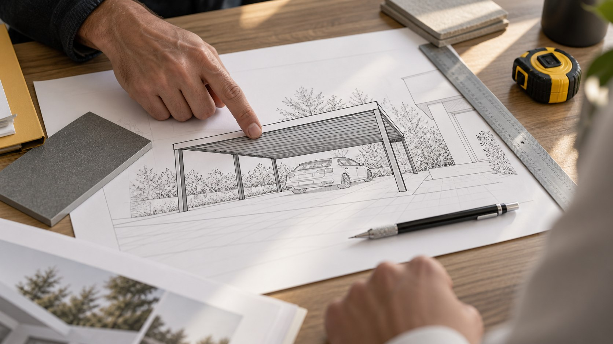
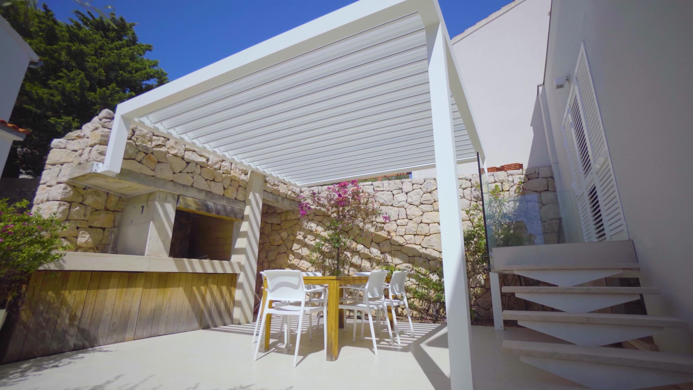
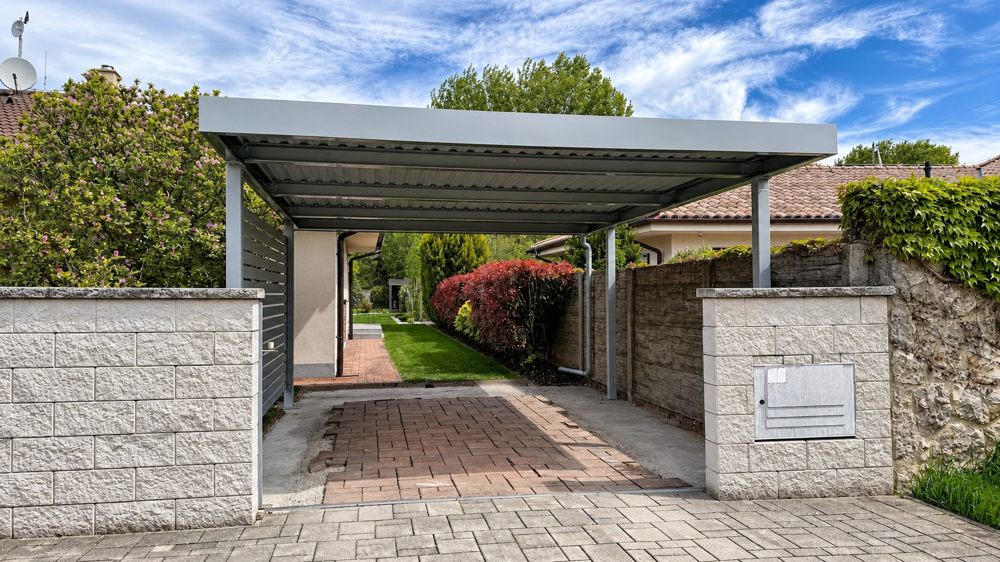
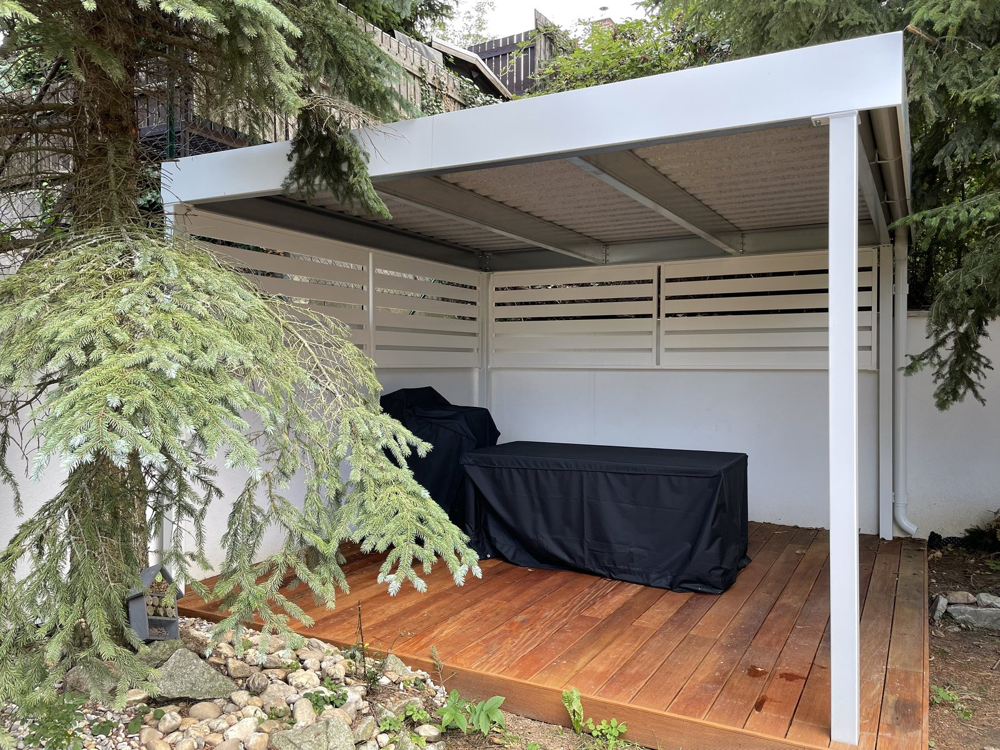
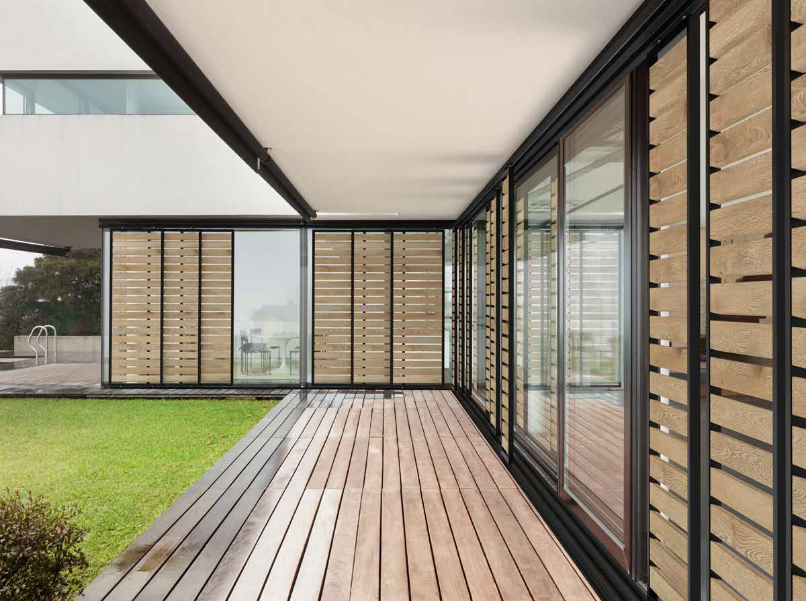
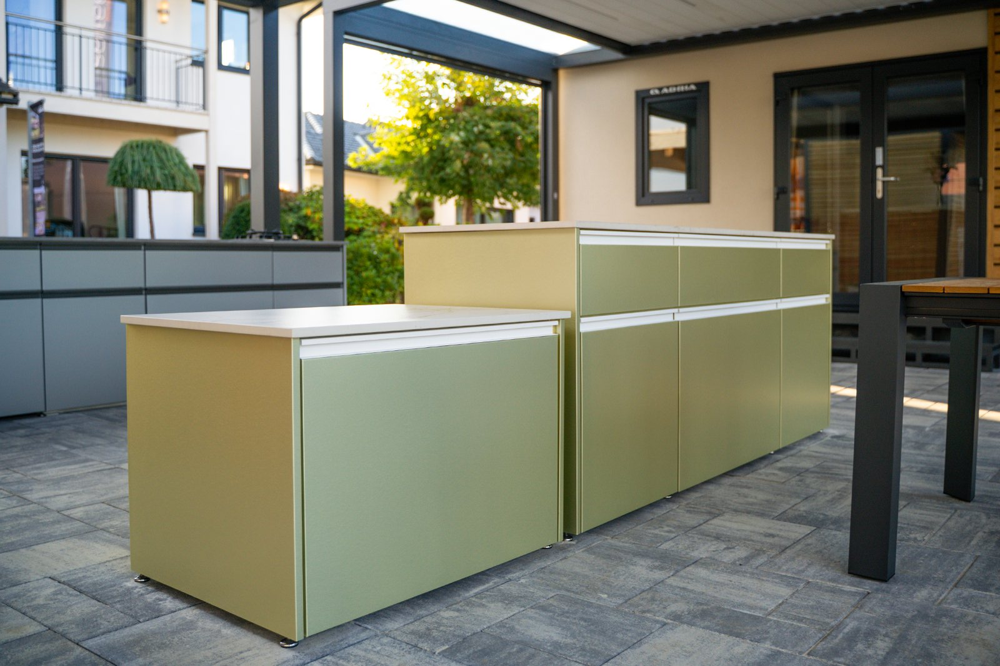
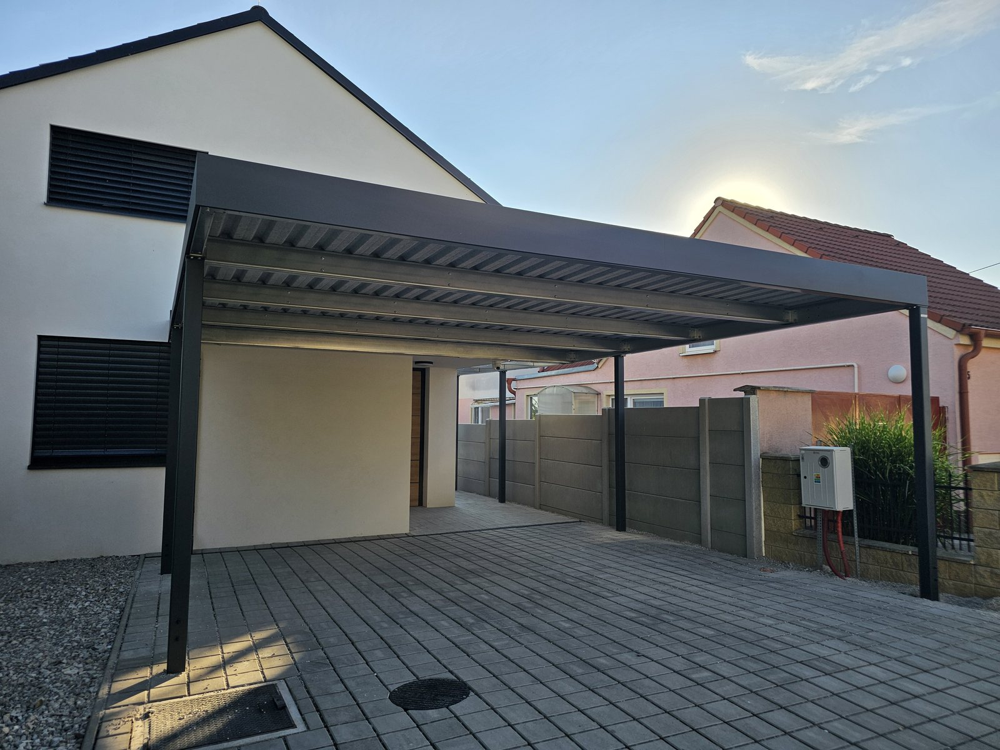
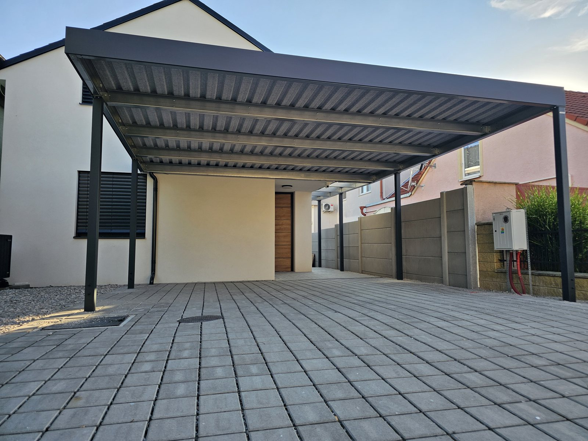
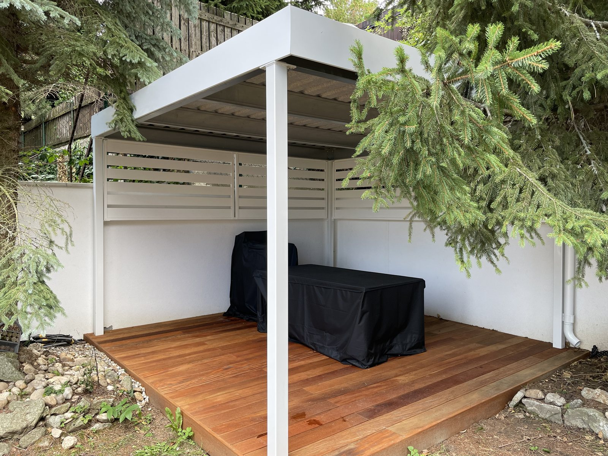

01Návrh alebo konfigurátor
Pošlete nám základné rozmery a poviete, čo chcete chrániť. Môžete priložiť aj uloženú zostavu z 3D konfigurátora; návrh pred cenovou ponukou technicky skontrolujeme.

Chránime auto aj terasu pred slnkom, dažďom a snehom. Navrhneme, vyrobíme a namontujeme — od zamerania po hotovú realizáciu.
Ponuka
 prémiový hliníkový systém
Celohliníkové carporty, pergoly, prestrešenia a tienenie.
prémiový hliníkový systém
Celohliníkové carporty, pergoly, prestrešenia a tienenie.

Prístrešky pre autá
1 – 3 autá, šírka do 8 m
Vybrať prístrešok
 Bioklimatické pergoly
6 modelov podľa rozpätia, šírka do 6 m
Zobraziť
Bioklimatické pergoly
6 modelov podľa rozpätia, šírka do 6 m
Zobraziť

Záhradné prístrešky rozpon 3 – 8 m Zobraziť Carport Soltec
SL 170 / SL 240, dĺžka do 8,5 m
Zobraziť
Carport Soltec
SL 170 / SL 240, dĺžka do 8,5 m
Zobraziť
 Pevné prestrešenia
ISO panel 30 mm alebo sklo
Zobraziť
Pevné prestrešenia
ISO panel 30 mm alebo sklo
Zobraziť

Tienenie
ZIP roleta, panely, brisoleje
Zobraziť

Vonkajšie kuchyne
ALU konštrukcia · 20 mm technický kameň
Zobraziť
Konfigurátor
Štyri riešenia, jeden konfigurátor. Rozmer, farbu a výbavu vidíte hneď v 3D.
Zadarmo a bez registrácie.
Výstupom je orientačná cena.
Dve značky, jeden prístup
Spájame vlastnú výrobu s prémiovým hliníkovým systémom. Podľa toho, čo od riešenia čakáte, siahneme po jednom alebo po druhom — a poradíme, ktorá cesta sa k vášmu domu hodí.


Vyrábame a montujeme vlastné prístrešky — pre autá, terasy aj vstupy. Katalógové rozmery aj atypické zostavy.
Zobraziť ponuku
Dodávame a montujeme prémiový hliníkový systém pre carporty, pevné aj bioklimatické prestrešenia, tienenie a kuchyne.
Zobraziť ponukuPonuka
Ako to prebieha
Zameranie aj návrh sú zadarmo a nezáväzné. Presnú cenu potvrdíme až po obhliadke miesta.

01Pošlete nám základné rozmery a poviete, čo chcete chrániť. Môžete priložiť aj uloženú zostavu z 3D konfigurátora; návrh pred cenovou ponukou technicky skontrolujeme.
 02
02
Na mieste zmeriame priestor, skontrolujeme typ podkladu, výšky a prístup na montáž. Zameranie je bezplatné; potom pripravíme presnú cenovú ponuku.

03Oceľové konštrukcie Koverta vyrábame na Slovensku. Pri produktoch Soltec výrobu zabezpečuje výrobca; pred zadaním výroby kontrolujeme objednaný model, rozmer, farbu a kompatibilnú výbavu.
 04
04
Na zelenej ploche vieme vykopať a vybetónovať pätky ako samostatnú službu. Pri hotovej ploche najprv overíme, či je existujúci základ vhodný na bezpečné kotvenie.

05Konštrukciu dovezieme, osadíme a ukotvíme. Po montáži skontrolujeme strechu, odvodnenie a objednané doplnky a hotové riešenie vám odovzdáme.
Referencie
Vrelo odporúčam túto firmu. Robia krásnu a kvalitnú prácu. Šikovný, rýchly a zohratý tím. Skvelá spolupráca od naplánovania až po realizáciu. Pomer cena a kvalita sú zodpovedajúce. Ďakujem
Bezproblémová realizácia prístrešku. Super komunikácia, rýchla dohoda a kvalitne odvedená práca. Všetko prebehlo OK a bez komplikácií. Môžem len odporučiť!
Môžem len doporučiť, vynikajúca spolupráca od zadania až po realizáciu. Top profesionálny prístup, dobré rady na základe bohatých skúseností. S pergolou sme celá rodinka veľmi spokojní.
Keď kvalitný prístrešok pre auto alebo v našom prípade pre autokaravan, tak určite firma Koverta z Nitry.
Boli sme velmi spokojní. Túto firmu môžeme len odporučiť. Velmi korektný dôveryhodný prístup. Chlapci sú šikovný a rýchli. Sme radi že sme Vás spoznali. Ďakujeme.
Tri „P“ = PROFESIONALITA / PRECÍZNOSŤ / PROMPTNOSŤ. Ďakujem za skvele odvedenú prácu.
Vrelo odporúčam, odbornosť, šikovnosť, cit pre detail
Boli sme veľmi spokojní s prístupom od ponuky až po realizáciu!
Maximálna spokojnosť 👍
Rýchle jednanie, rýchla výroba, veľmi korektný prístup. Môžem jedine odporučiť
Špičková firma, TOP vyhotovenie, vrelo odporúčam. Profesionálne jednanie od A po Z.
Oceňujem seriózne jednanie, profesionálny prístup a kvalitne vykonanú prácu. Maximálna spokojnosť, určite odporúčam.
Realizácie


Pozrite si celú galériu podľa typu riešenia — od malých prístreškov po rozmerné zostavy.
Celá galéria realizáciíMateriál a výbava
Konštrukcia, povrch aj výbava sa riešia spolu — ešte pred výrobou. Na hotovom prístrešku preto nevidno technické vrstvy.
Prejsť na nezáväznú ponukuOceľové komponenty chránime žiarovým zinkovaním a lakovaným povrchom. Konštrukcia preto nepotrebuje pravidelný náter.
Povrch
žiarový zinok + lak
Šírka
do 8 m
Pultová strecha z trapézového profilu má hliníkový lemovací plech, odkvap aj izoláciu proti prehrievaniu a hluku dažďa. Tieto prvky sú zahrnuté v cene.
Strecha
pultová, trapéz
V cene
odkvap + izolácia

Lamely z hliníka, dreva alebo WPC, v širokom výbere farieb z palety RAL.
Výška
plná aj polovičná
Farba
paleta RAL

Bočné výplne, osvetlenie a ďalšiu výbavu zahrnieme do návrhu podľa konkrétnej zostavy a miesta.
Výbava
podľa návrhu
Elektro
voliteľná príprava
Nosné systémy Soltec sú z hliníka a nerezu. Tvar rámu, stĺpov a strechy sa mení podľa toho, či ide o pergolu, carport alebo pevné prestrešenie.
Materiál
hliník + nerez
Povrch
práškový lak

Bioklimatická pergola používa otočné lamely. Pevné prestrešenia a carporty majú podľa radu sklo alebo ISO panel — nejde o jednu univerzálnu strechu.
Pergola
otočné lamely
Pevná strecha
sklo / ISO panel

ZIP rolety, posuvné panely a sklenené steny riešia tieň, súkromie alebo ochranu pred vetrom. Kompatibilita sa vyberá podľa konkrétneho systému.
Tieň
ZIP roleta
Uzavretie
panel / sklo

LED osvetlenie, pohony, senzory, ohrievače a ďalšie prvky sa dopĺňajú iba tam, kde ich podporuje vybraný produkt a zostava.
Osvetlenie
podľa systému
Automatika
podľa výbavy
Časté otázky
Nenašli ste odpoveď? Zavolajte nám, poradíme aj bez záväzku.
+421 948 482 266Katalógové zostavy začínajú na 4 497 € za prístrešok pre jedno auto, 6 497 € za dve autá a 4 297 € za záhradný prístrešok — vrátane dopravy a montáže. Konečnú sumu posunie rozmer, strecha, výplne, farba a zaťaženie snehom vo vašej lokalite. Napíšte nám rozmer a mesto, cenu pošleme do 24 hodín; zameranie je zadarmo.
Od objednávky po montáž to býva rádovo niekoľko týždňov podľa vyťaženosti výroby. Samotná montáž štandardného prístrešku trvá jeden deň. Väčšie zostavy, boxy alebo zasklenie môžu potrebovať viac času; harmonogram dostanete pred realizáciou.
Prístrešok pre autá chráni vozidlá, záhradný prístrešok kryje terasu alebo vstup a bioklimatická pergola Soltec umožňuje regulovať svetlo a vetranie otočnými lamelami. Pri výbere zohľadníme účel, rozpätie, orientáciu domu a miestne podmienky.
Povoľovací režim závisí od rozmeru, umiestnenia a konkrétneho pozemku. Pred realizáciou si požiadavky potvrďte s príslušným stavebným úradom; pri návrhu vám vieme pripraviť rozmery a osadenie konštrukcie.
Betónové pätky vieme vykopať a vybetónovať — je to doplnková služba, ktorú si väčšina zákazníkov objedná spolu s montážou. Nie je to však automaticky v cene: nie na každom pozemku sa robia. Ak už máte betónovú platňu, zámkovú dlažbu alebo hotové pätky, kotvíme priamo do nich.
Únosnosť a hrúbku podkladu overíme pri zameraní. V ponuke je vždy jasne napísané, čo je v cene a čo prípadne ostáva na vás.
Podľa modelu sú k dispozícii bočné výplne z dreva, hliníka alebo drevodekoru, LED osvetlenie, ZIP rolety, sklenené výplne, uzamykateľný box, elektrická prípojka v stĺpe a príprava na fotovoltiku.
Katalógové rozmery sú len najčastejšie objednávané veľkosti — nie hranica toho, čo vieme vyrobiť. Konštrukciu robíme na mieru pozemku: šírka, dĺžka, výška aj rozmiestnenie stĺpov sa dajú prispôsobiť tomu, čo na mieste prekáža. Atypický rozmer nie je príplatok za rozmar, je to bežná objednávka.
Pevné prístrešky Koverta aj hliníkové carporty počítame na zaťaženie snehom podľa snehovej oblasti, v ktorej stojíte — konštrukcia sa preto v Nitre a v Tatrách nenavrhuje rovnako.
Bioklimatická pergola je podľa výrobcu tieniaci systém. Pri zvýšenom zaťažení sa treba riadiť návodom výrobcu a zo strechy odstrániť sneh či iné dodatočné zaťaženie; dostupné sú aj senzory ako doplnková výbava.
Bežná údržba je jednoduchá: povrch stačí podľa potreby očistiť vodou a neagresívnym prípravkom. Priebežne skontrolujte odtok vody a odstráňte lístie; pri pergole s lamelami aj voľný pohyb lamiel.
Všetko, čo má prístrešok raz vedieť. Bočné výplne, ZIP rolety, osvetlenie, zásuvku v stĺpe aj uzamykateľný box zaradíme do návrhu hneď — pri doplnkoch Soltec treba ešte pred výrobou overiť kompatibilitu s vybraným profilom, rozmerom a spôsobom montáže.
Jediné, čo sa dopĺňa ťažko, je nosnosť. Ak viete, že o dva roky pribudne fotovoltika alebo ťažšia strecha, povedzte nám to hneď.
Áno. Vyrábame na Slovensku a montujeme po celom Slovensku; doprava aj montáž sú súčasťou ceny bez ohľadu na to, ako ďaleko to je. Zameranie robíme osobne na mieste.
Cenová ponuka zadarmo
Stačí približný rozmer a mesto. Ozveme sa do 24 hodín a dohodneme bezplatné zameranie.
Ozveme sa vám do 24 hodín. Ak sa dovtedy nikto neozve, radšej zavolajte — mohlo sa stať, že dopyt k nám nedošiel. Takto to bude pokračovať:
Fotky, ktoré ste vybrali, pošlite prosím e-mailom — formulár ich k nám neprenesie. Poslať fotky na obchod@koverta.sk
Súri to? +421 948 482 266 · obchod@koverta.sk
Server nám nevrátil odpoveď, takže nevieme povedať, či dopyt prešiel. Nečakajte na nás — ozvite sa priamo, vybavíme to hneď: